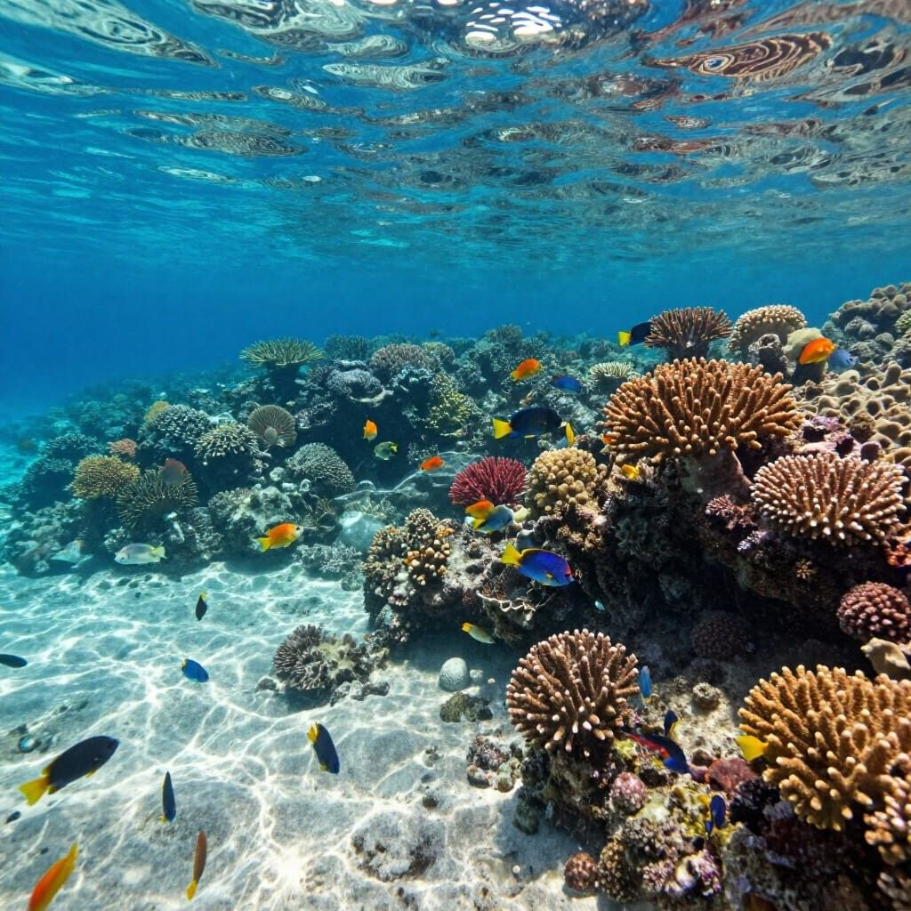
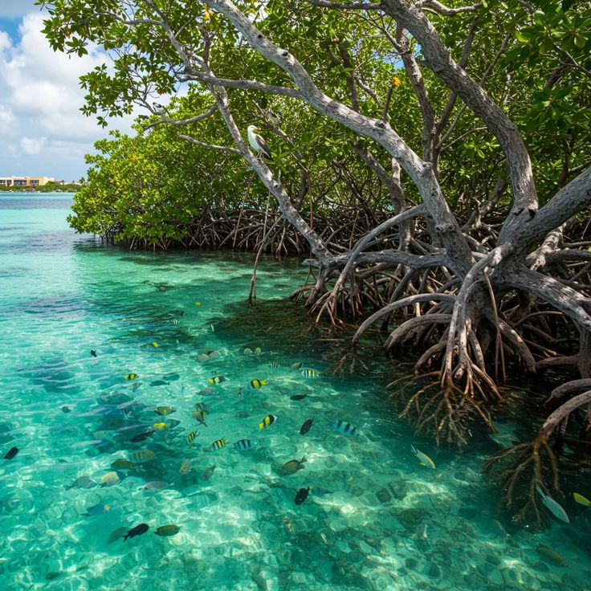
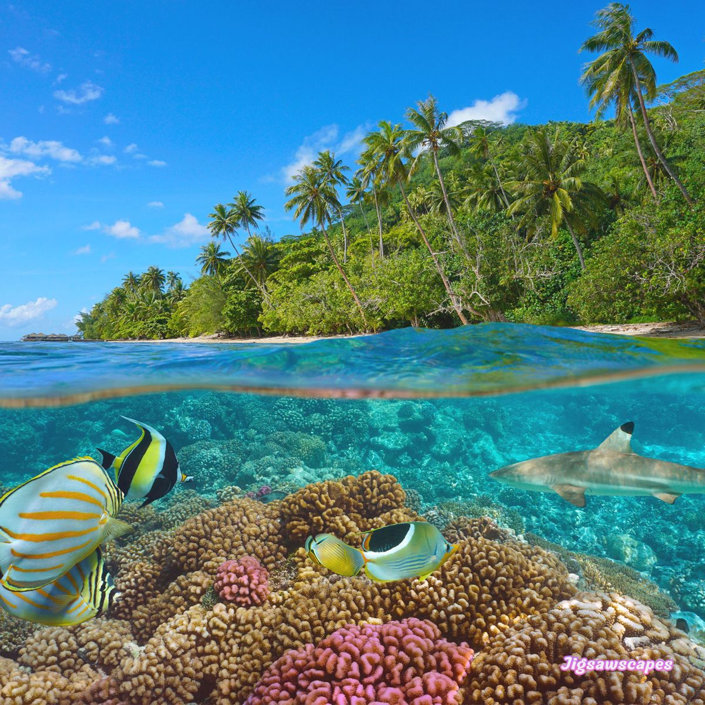
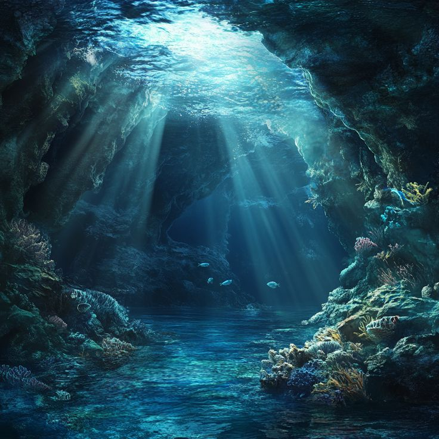

Es la increíble variedad de vida que habita en los mares y océanos de nuestro planeta. No se trata solo de contar cuántas especies existen, sino de entender cómo interactúan entre sí y con su entorno para mantener el equilibrio y la vida en la Tierra.

Estructuras vivas que sirven de refugio, alimento y protección para miles de especies en aguas poco profundas.

Zonas costeras clave donde el agua dulce se une con el mar, funcionando como guarderías naturales de vida.

La inmensa columna de agua lejos de la costa, donde la vida flota y viaja en grandes corrientes.

Llanuras y fosas oscuras a miles de metros de profundidad, donde los ecosistemas subsisten sin luz solar gracias a fuentes termales.